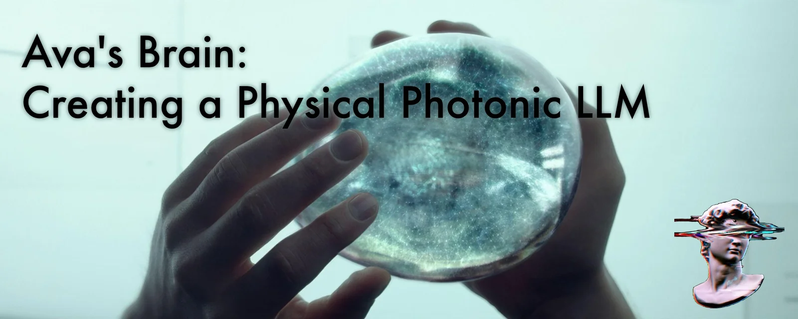
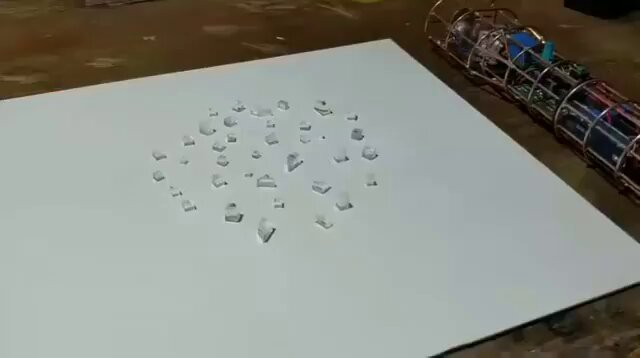
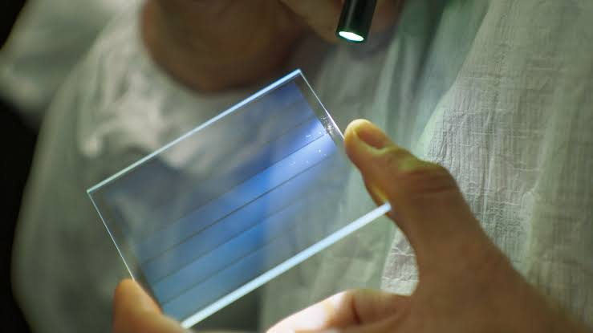

Ava's Brain: Creating a Physical Photonic LLM
Originally published at https://x.com/singularityhack/article/2125304517742804992

In the movie Ex Machina (2014) a scientist named Nathan shows a translucent, glowing sphere representing a new kind of AI mind designed for a female AI named Ava. He describes it as a structured gel that can rearrange itself at the molecular level to form new memories while holding onto old ones.
Until very recently, this scene was pure movie magic. Today, three separate breakthroughs in hardware physics are converging on the exact architecture Nathan described:
- Physical Neural Networks: Etching model weights directly into matter instead of shuttling them from memory (pioneered in silicon by Taalas).
- Photonic Computing: Using light to execute matrix math at the speed of propagation.
- Volumetric 3D Fabrication: Escaping flat, 2D semiconductor wafers to compute inside the three-dimensional volume of glass and polymers.
Storing a frontier-shattering model in a brain-sized volume may not be science fiction after all.
Making Matter Execute the Model
Today’s AI runs on a bottleneck. Even on the fastest GPU clusters, weights sit in high-bandwidth memory and are constantly shuttled to arithmetic cores. That data movement eats up most of the energy and time in every forward pass. Physical neural networks flip this construction on its head by using the material itself to do computation.
We are already seeing this happen across two different substrates:
- Hardwired Silicon (Taalas): Rather than running an LLM as software on a general-purpose processor, Taalas compiles a trained model directly into the physical metal layers of a custom chip (their HC1 architecture). Storage and computation collapse into the same physical transistors. You trade away reprogrammability, and in return, you obliterate the memory wall.
- Computing with Light (3D Photonics): What happens if you replace electrons in flat silicon with photons in 3D glass? When a pattern of light enters a transparent medium filled with microscopic phase-shifters and waveguides, wave interference naturally performs linear transformations, effectively executing matrix multiplication as light passes through.

This year, researchers demonstrated a programmable 3D photonic neural network chip fabricated by writing waveguides directly into glass with a femtosecond laser (Nature Communications, 2026). Using an 8-layer volumetric architecture, the device hit 6,554 TOPS of throughput while processing 2D inputs directly. Paired with demonstrations of integrated optical backpropagation and optical processors running transformer workloads like BERT, the building blocks of light-based inference are no longer theoretical.
How Many Parameters Fit Inside a Human Brain?
Once you start writing optical structures into 3D glass, an obvious question follows: How big of a model could you pack into a human brain's volume? Microsoft’s Project Silica team published a landmark paper in Nature (2026) demonstrating volumetric laser writing in glass at a density of 1.59 gigabits per cubic millimeter.

If you take that demonstrated density and extrapolate it across 1.3 liters (the volume of an adult human brain) you get the following potential storage density:
- Total Raw Capacity: ~2.067 quadrillion bits (258 terabytes)
- Equivalent 4-Bit Model Weights: ~517 trillion parameters
Let’s put 517 trillion parameters into perspective against the models we actually run today:
| Model Scale | 4-Bit Weight Storage | Scale vs. Brain-Sized Glass |
|---|---|---|
| 8B (Edge / Local) | ~4 GB | ~129,000x smaller |
| 70B (Workhorse Open Model) | ~35 GB | ~14,700x smaller |
| 2.8T (e.g., Kimi K3 total params) | ~1.4 TB | ~185x smaller |
| 100T (Hypothetical Mega-Cluster) | ~50 TB | ~5x smaller |
| 517T (1.3L Silica Glass Extrapolation) | ~258 TB | 1x (Theoretical Ceiling) |
To be clear, this leaves zero room for optical routing, laser sources, detectors, cooling, or runtime KV caches. You cannot simply load a 500T model into a glass paperweight and boot it up. Still, the takeaway is that physical weight density is not the fundamental barrier. A sphere the size of a human head has more than enough physical volume to hold a 500-trillion-parameter model.
What Could a 500-Trillion-Parameter LLM Do?
If we ever solved the compute and routing bottlenecks to actually run a 500T-parameter model inside that volume, what would change? Would it just know more trivia? Probably not. The real leap wouldn’t be prettier single-turn answers but long-horizon reliability.
Consider the math of autonomous agents. Suppose an agent has to execute 1,000 sequential steps to build, test, and deploy a complex software system, and a single uncorrected mistake derails the run:
- 99.0% per-step accuracy -> 0.0043% chance of finishing (effectively zero)
- 99.9% per-step accuracy -> 36.8% chance of finishing
- 99.99% per-step accuracy -> 90.5% chance of finishing
A tiny, sub-1% gain in single-step reliability produces a massive phase transition in what an AI can accomplish over weeks of independent work. Research like the ICLR 2026 paper "The Illusion of Diminishing Returns" and METR’s task-horizon benchmarks highlight this exact compounding effect: when step-level error rates drop toward zero, an AI stops acting like a brilliant intern who needs constant supervision and starts acting like a senior engineer who catches its own mistakes before they cascade.
At 500T parameters, especially if structured as a massive Mixture-of-Experts (MoE) rather than a brute-force dense network, you get deep, cross-domain synthesis across physics, math, code, and biology without the context degradation that plagues smaller models.
What’s Still Missing: Wetware, Heat, and the Data Wall
So why don't we have Ava’s brain sitting on a lab bench? Because three massive engineering walls stand between a glass storage block and a thinking machine:
- Static Glass vs. Plastic "Wetware": Laser-written silica glass is mostly static, and optical systems excel at linear math while struggling with the nonlinear activations, dynamic attention, and fast state updates modern transformers require. Interestingly, soft-matter research hints at a bridge: in 2024, University of Reading researchers showed that an electroactive hydrogel could retain history-dependent ionic states while playing a simplified game of Pong. A real artificial brain must be a hybrid combining rigid 3D photonic pathways for long-term weights with reconfigurable electronic or ionic elements for short-term plasticity.
- The 20-Watt Thermal Ceiling: The human brain runs on roughly 20 watts. Packing 500 trillion active parameters into 1.3 liters without biological energy efficiency would produce unacceptable heat levels.
- The Training Bottleneck: Even if you could manufacture the hardware tomorrow, how do you train it? Under classic Stanford’s 2026 AI IndexChinchilla scaling (~20 tokens per parameter), a dense 500T model would demand roughly 10^16 (10 quadrillion) training tokens and ~3 x 10^31 FLOPs. As Stanford’s 2026 AI Index underscores, high-quality human data is finite, forcing future frontier systems to rely heavily on synthetic data loops, sparse MoE routing, and test-time compute.
The Philosophical Inversion
Even if the first real versions look like hybrid optical-electronic modules rather than glowing spheres of gel, the trajectory points toward a profound shift in how we could build future intelligence. For the entire history of computing, software has been a ghost haunting general-purpose hardware. It's been mathematical instructions simulated on chips that know nothing about what they are running.
Physical neural networks erase that boundary. Whether etched into Taalas’s silicon layers or written by femtosecond lasers into 3D glass, weights stop being numbers stored in a file and become the physical geometry of an object. It won’t automatically give a machine consciousness. But it turns intelligence from something a computer runs into something physically embodied within matter and locally present within an individual machine.
My other writings: https://www.justiceconder.com/blog